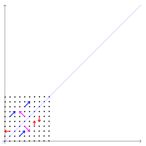
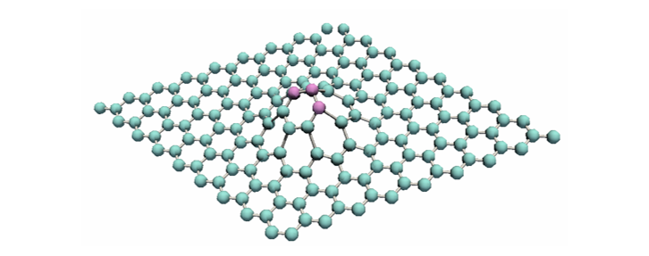

다크 프로그래머: 선형대수학
Wikipedia: Singular Value Decomposition
핸즈온 머신러닝: 8장-차원 축소
데이터 사이언스 스쿨: 3.5 PCA
scikit learn: Faces recognition examples using eigenfaces and SVMs
A.I. Wiki: 고유벡터, PCA, 공분산 및 엔트로피에 대한 기초 강의
1. PCA 이해를 위한 간단한 선형대수학
- 머신러닝, 딥러닝 공부 블로그엔 PCA 관련 글이 상당히 많습니다.
- 그만큼 중요한 기능이지만 많은 글에서 차원 축소에만 초점을 맞추고 있습니다.
- PCA의 본질로부터 이끌어낼 수 있는 차원을 축소 이상의 기능을 살펴보겠습니다.
- PCA는 선형대수에 뿌리를 두고 있습니다. 의미 중심으로 최대한 요약했습니다.
1.1. 고유값eigenvalue, 고유벡터eigenvector
행렬에 벡터를 곱하면 행렬이나 벡터가 나오는 것이 일반적입니다.
$ A \boldsymbol{v}
= \begin{pmatrix} a_{11} & a_{12} & a_{13}\\ a_{21} & a_{22} & a_{23} \end{pmatrix} \begin{pmatrix} v_{1} \\ v_{2} \\ v_{3}\end{pmatrix}
= \begin{pmatrix} a_{11}v_1 + a_{12}v_2 + a_{13}v_3\\ a_{21}v_1 + a_{22}v_2 + a_{23}v_3 \end{pmatrix}
$그런데, “어떤 행렬 A에 벡터 v를 곱했더니 벡터의 크기만 변하는” 일이 벌어질 때가 있습니다.
$A \boldsymbol{v} = \lambda \boldsymbol{v} $예를 들면, 이런 상황입니다.
$A = \begin{pmatrix} 2 & 0 & -2\\ 1 & 1 & -2 \\ 0 & 0 & 1\end{pmatrix} \text{이고 } \boldsymbol{v}= \begin{pmatrix} 1 \\ 1 \\ 0\end{pmatrix} \text{라면,} $
$A \boldsymbol{v} =
\begin{pmatrix} 2 & 0 & -2\\ 1 & 1 & -2 \\ 0 & 0 & 1\end{pmatrix} \begin{pmatrix} 1 \\ 1 \\ 0\end{pmatrix}
= \begin{pmatrix} 2 \\ 2 \\ 0\end{pmatrix} = 2 \boldsymbol{v}$
- 이 때 벡터 $\boldsymbol{v} $를 고유벡터
eigenvector, 상수 $ \lambda $를 고유값eigenvalue라고 합니다.- 기하학적으로, 행렬 $A$의 고유벡터는 선형변환 $A$에 의해 방향은 보존되고 크기만 변화되었습니다.
- 그리고 고유값 $ \lambda $는 고유벡터가 몇배로 변하는지를 나타내는 값입니다.
- 애니메이션으로 표현하면 다음과 같습니다.
- 파란색 벡터들은 선형변환을 해도 방향이 일정함을 알 수 있습니다.
- 파란색 벡터의 방향이 고유벡터의 방향과 같기 때문입니다.

1.2. 고유값분해eigendecomposition
- 하나의 행렬 $A$는 고유벡터와 고유값을 여럿 가질 수 있습니다.
- 행렬 $A$의 고유벡터를 열벡터로 갖는 행렬을 $P$,
- 고유값들을 대각원소로 갖는 대각행렬을 $\Lambda$라고 하면 다음 식이 성립합니다.
$ AP = P \Lambda $. 즉, $ A = P \Lambda P^{-1} $로 분해됩니다. - 이를 고유값분해
eigendecomposition이라 합니다.
- 모든 정방행렬을 고유값분해 할 수는 없습니다.
- 그러나 가능하다면 이 때의 고유벡터는 일차 독립입니다.
- 사실 거꾸로가 맞습니다.
- $n \times n$ 정방행렬 $A$의 고유값분해가 가능하려면 $n$개의 일차독립인 고유벡터를 가져야 합니다.
1.2. 특이값분해Singular Value Decomposition(SVD)
- 정방행렬이 아니어도 비슷한 방식으로 분해될 수 있습니다.
- 특이값분해
Singular Value Decomposition(SVD)이라고 합니다. - 임의의 $m \times n$ 행렬의 특이값분해는 다음과 같이 정의됩니다.
- $A= U \Sigma V^T $.
- 이 때 $U$, $\Sigma$, $V$는 각기 다음과 같습니다.
- $U: m \times m $ 직교행렬
- $\Sigma: m \times n$ 직사각 대각행렬
- $V: n \times n $ 직교행렬
- 특이값분해
- $A \boldsymbol{v} = U \Sigma V^T \boldsymbol{v}$는 기하학적으로 다음과 같습니다.
- Step 1. $\boldsymbol{v_1} = V^T \boldsymbol{v}$ : 회전변환
- Step 2. $\boldsymbol{v_2} = \Sigma\boldsymbol{v_1}$ : 크기변화
- Step 3. $\boldsymbol{v_3} = U \boldsymbol{v_2}$ : 회전변환

- 이 때 $V$는 직교행렬
orthogonal matrix입니다.- 행벡터($V^T$의 열벡터)가 유클리드 공간의 정규 직교 기저
basis를 이룹니다. - $m \times n$ 행렬 $A$는 $n$개의 feature가 있는 데이터 $m$개로 표현될 수 있습니다.
- $V$의 차원 $n$은 주성분의 단위 벡터들로 해석됩니다.
- 바꾸어 말하면 feature $n$개로부터 직교하는 벡터들을 추출한 것입니다.
- 이들 중 첫 $d$개만 선택함으로써 데이터의 차원을 압축할 수 있습니다.
- 행벡터($V^T$의 열벡터)가 유클리드 공간의 정규 직교 기저
2. 주성분분석principal component analysis(PCA)
- $n$개의 feature를 설명하기 위해 필요한 기저의 수는 더 적을 수 있습니다.
- $(1, 0.01), (-1.2, 0.1), (3, -0.03)$은 $(x, y)$라는 두 개의 feature가 있습니다.
- 그러나 $x$방향에 비해 $y$방향의 분포가 적어 $y$방향을 무시해도 무리가 없습니다.
- 이렇게 주성분(여기에선 $x$축)을 중심으로 분석하는 것을 주성분분석
principal component analysis(PCA)라고 합니다. - 주성분을 통해 데이터의 특질에 접근할 수 있기 때문에 많은 것이 가능합니다.
2.1. PCA 방법
- $n$개의 feature를 가지는 데이터가 $m$개 있다고 합시다.
- 이 데이터셋 $X$는 $ m \times n $ 행렬로 표현될 수 있습니다.
- $X$의 PCA는 공분산
covariance행렬 $(n \times n)$로부터 구할 수도 있고 - 특이값분석 $X = U \Sigma V^T$으로부터 구할 수도 있습니다.
2.1.1. 공분산행렬 고유값분해 PCA
Step 1. 데이터 $X$의 공분산
covariance행렬 $Cov$를 구합니다.
$$Cov = \frac{1}{n-1} X^T X$$Step 2. $C = V \Sigma_{Cov} V^{T}$로 고유값분해를 합니다.
$$\begin{equation}
\begin{split}
Cov &= \frac{1}{n-1} X^T X = \frac{1}{n-1} \left(U \Sigma V^T \right)^T \left(U \Sigma V^T \right)\\
&= \frac{1}{n-1} \left(V \Sigma U^T \right) \left(U \Sigma V^T \right) = \frac{1}{n-1} V \Sigma^2 V^T\\
&= V \Sigma_{Cov} V^T
\end{split}
\end{equation}$$
- 각 성분의 설명은 다음과 같습니다.
- $\Sigma_{Cov} :$ $\lambda$ 크기순으로 정렬된 $n \times n$ 대각행렬.
- $V :$ $Cov$의 고유벡터 $e_i$를 열벡터로 가지는 직교행렬.
- 가장 분산이 큰 방향이 $e_1$이며 $e_k$의 k가 증가할수록 분산이 줄어듭니다.
2.1.2. 특이값분해 PCA
- Step 1. 데이터 $X$를 특이값 분해합니다.
$$X = U \Sigma V^T $$
scipy.linalg.svd,numpy.linalg.svd에서 사용하는 방식입니다.- 한번에 고유값행렬 $\Sigma$와 고유벡터행렬 $V$를 얻을 수 있습니다.
- $U : m \times m $ 직교행렬. $U$의 열벡터는 $XX^T$의 고유벡터입니다.
- $V : n \times n $ 직교행렬. $V$의 열벡터는 $X^TX$, 즉 공분산 $Cov$의 고유벡터입니다.
2.1.3. PCA 결과 활용
- 우리 관심사는 $n$개의 feature를 대표적으로 설명해줄 인자들입니다.
- 따라서 $Cov$의 고유벡터와 같은 $V$의 열벡터를 PC1, …, PCn으로 사용합니다.
- $V$의 열벡터 수는 $n$으로, 데이터 feature 수와 같습니다.
- 고유벡터를 전부 사용하면 PCA의 의미가 없습니다.
- 가장 주요한 고유벡터 $d$개만을 선별하여 사용합니다.
- 선별될 $d$의 수는 시각화(2 or 3), 해석력 확보(ex. >95%)에 따라 다릅니다.
2.2. PCA 활용: sklearn
scikit-learn에서는
sklearn.decomposition을 통해 PCA를 제공합니다.상세한 내용은 핸즈온 머신러닝: 8장-차원 축소를 참고바랍니다.
MNIST 데이터에 PCA를 적용하면 다음과 같습니다.
1
2
3
4
5
6
7
8
9
10
11
12
13
14
15# MNIST data load
from sklearn.datasets import fetch_openml
mnist = fetch_openml("mnist_784", version=1)
mnist.target = mnist.target.astype(np.uint8)
# X(feature) and y(target) split
X = mnist["data"]
y = mnist["target"]
# apply PCA
from sklearn.decomposition import PCA
pca = PCA(n_components=0.95) # secure 95% of data variance
X_reduced = pca.fit_transform(X)
X_recovered = pca.inverse_transform(X_reduced)데이터의 설명력을 95% 확보하도록 고유벡터의 숫자를 설정합니다.
print(pca.n_components_)로 확인하면 154개를 이용했음을 알 수 있습니다.- MNIST 데이터의 인자 수 = $28 \times 28 = 784$이므로, 20%가 안되는 분량입니다.
- 그럼에도 불구하고 배경이 흐려진 것 외에는 숫자가 거의 그대로 잘 보입니다.
2.3. PCA 응용: eigenface
숫자가 아닌 얼굴에 PCA를 적용하면 재미있는 일을 할 수 있습니다.
상세한 내용은 데이터 사이언스 스쿨: 3.5 PCA를 참고바랍니다.
올리베티 얼굴 데이터의 20번째 얼굴을 불러오면 다음과 같습니다.
1
2
3
4
5
6
7
8
9
10
11
12
13
14
15
16
17
18
19import matplotlib.pyplot as plt
from sklearn.datasets import fetch_olivetti_faces
faces_all = fetch_olivetti_faces()
K = 20
faces = faces_all.images[faces_all.target == K]
fig, ax = plt.subplots(nrows=2, ncols=5, figsize=(10, 5))
axes = ax.ravel()
for face, axi in zip(faces, axes):
axi.imshow(face, cmap=plt.cm.bone)
axi.grid(False)
axi.xaxis.set_ticks([])
axi.yaxis.set_ticks([])
plt.subplots_adjust(top=1, bottom=0, hspace=0, wspace=0.05)
plt.tight_layout()2개의 인자만 이용해서 PCA 변환과 역변환을 적용합니다.
1
2
3
4
5pca_oli = PCA(n_components=2)
faces_ori = faces_all.data[faces_all.target==K]
faces_reduced = pca_oli.fit_transform(faces_ori)
faces_recovered = pca_oli.inverse_transform(faces_reduced)역변환 결과물을 원본과의 재구성오차
reconstruction error와 함께 그립니다.1
2
3
4
5
6
7
8
9
10
11
12
13
14
15
16from sklearn.metrics import mean_squared_error
fig, ax = plt.subplots(nrows=2, ncols=5, figsize=(10, 5))
axes = ax.ravel()
for face_ori, face_recovered, axi in zip(faces_ori, faces_recovered, axes):
mse = mean_squared_error(face_ori, face_recovered)
axi.imshow(face_recovered.reshape(64,64), cmap=plt.cm.bone)
axi.set_title(f"mse={mse:1.2e}")
axi.grid(False)
axi.xaxis.set_ticks([])
axi.yaxis.set_ticks([])
plt.subplots_adjust(top=1, bottom=0, hspace=0, wspace=0.05)
plt.tight_layout()데이터의 평균과 주성분1
PC1, 주성분2PC2을 확인합니다.주성분도 $n = 64 \times 64 =4096$개의 데이터를 가진 이미지입니다.
그래서 고유얼굴이라는 의미로 eigenface라고 부릅니다.
1
2
3face_mean = pca_oli.mean_.reshape(64, 64)
face_p1 = pca_oli.components_[0].reshape(64, 64)
face_p2 = pca_oli.components_[1].reshape(64, 64)
평균 얼굴에 PC1의 가중치를 달리해서 더하면, 얼굴 방향이 바뀝니다.
평균 얼굴에 PC2의 가중치를 달리해서 더하면, 웃는 정도가 바뀝니다.
2.4. PCA 응용: 2D 원자 찾기
PCA가 데이터가 주로 분산된 방향을 찾는다는 점에 착안하여 소재 문제를 풀기도 합니다.
- 물질을 이루는 원자들은 선형
1D, 판상형2D, 입체형3D으로 배열됩니다. - 이 중 graphene과 같이 2D로 배열된 원자들은 독특한 성질이 있습니다.
- 그러나 국부적으로 2D로 배열된 원자만 골라내는 것은 쉬운 일이 아닙니다.
- 3D 공간상에 면처럼 위치한 점들
manifold이기 때문입니다.
- 물질을 이루는 원자들은 선형
고체를 이루는 원자들이 구조상 주기를 가지는 성질을 이용합니다.
- 푸리에 변환을 적용해 $x$, $y$, $z$ 세 방향으로의 주기성을 구합니다.
- 주기성을 바탕으로 구 형태의 공간을 설정, 이 안에 들어오는 원자들만 분류합니다.
- 이 원자들의 좌표에 PCA를 적용해 국부적으로 2D 배열된 원자를 구분합니다.

3. 비선형 데이터
- PCA는 비선형 데이터에는 취약합니다.
- PCA의 기반이 선형 행렬 연산이기 때문입니다.
- 상세한 내용은 핸즈온 머신러닝: 8장-차원 축소를 참고바랍니다.
3.1. kernel PCA
- PCA 연산 전 커널을 씌움으로써 이를 극복합니다.
- 커널은 데이터를 매우 높은 고차원 특성 공간
feature space로 매핑합니다. - 만병통치약은 아닙니다만 커널 PCA는 커널이 씌워진 상태에서 PCA를 수행하기 때문에 선형 공간의 한계를 상당히 극복할 수 있습니다.
- 커널은 데이터를 매우 높은 고차원 특성 공간
Swiss-roll 데이터에 kernel PCA를 적용해 봅시다.
1
2from sklearn.datasets import make_swiss_roll
X, t = make_swiss_roll(n_samples=1000, noise=0.2, random_state=42)kernel PCA 또한
sklearn.decomposition에KernelPCA로 탑재되어 있습니다.3가지 kernel을 씌워보겠습니다:
linear,rbf,sigmoid1
2
3lin_pca = KernelPCA(n_components=2, kernel="linear", fit_inverse_transform=True)
rbf_pca = KernelPCA(n_components=2, kernel="rbf", gamma=0.0433, fit_inverse_transform=True)
sig_pca = KernelPCA(n_components=2, kernel="sigmoid", gamma=0.001, coef0=1, fit_inverse_transform=True)커널마다 다른 모양이 출력됩니다.
- Linear Kernel은 일반 PCA와 동일합니다.
- RBF와 Sigmoid는 형상이 원본 데이터(맨 왼쪽)와 크게 다릅니다.
- 파라미터를 바꿔가며 어떻게 변하는지 한번 보겠습니다.
polykernelrbfkernelsigmoidkernelcosinekernel재구성원상
pre-image과의 오차를 줄이는 방법을 찾아야 합니다.- 커널의 종류와 파라미터를 대상으로
GridSearchCV를 수행하기도 합니다. - PCA는 전처리 과정이므로, 머신러닝 기법과 궁합이 맞는 조건을 찾기 위해
Pipeline을 구성하기도 합니다.
- 커널의 종류와 파라미터를 대상으로
LogisticRegression과의 결합 예시입니다.
1
2
3
4
5
6
7
8
9
10
11
12
13
14from sklearn.model_selection import GridSearchCV
from sklearn.linear_model import LogisticRegression
from sklearn.pipeline import Pipeline
clf = Pipeline([("kpca", KernelPCA(n_components=2)),
("log_reg", LogisticRegression())
])
param_grid = [{"kpca_gamma": np.linspace(0.03, 0.05, 10),
"kpca_kernel": ["rbf", "sigmoid"]
}]
grid_search = GridSearchCV(clf, param_grid, cv=3)
grid_search.fit(X, y)
3.2. 다른 방법들
- 매니폴드 문제를 해결하기 위해 PCA와 근본적으로 다른 방법을 사용할 수도 있습니다.
3.2.1. LLE
- 지역 선형 임베딩
Locally Linear Embedding은 투영에 의존하지 않습니다.- 각 훈련 데이터가 가장 가까운 이웃
closest neighbor에 얼마나 선형적으로 연관되어 있는지를 찾습니다. - 그 다음, 국부적인 관계가 가장 잘 보존되는 훈련 세트의 저차원 표현을 찾습니다.
- 잡음이 너무 많지 않은, 꼬인 매니폴드를 펼치는데 잘 작동합니다.
- 각 훈련 데이터가 가장 가까운 이웃
- Swiss Roll을 LLE로 푼 예시입니다.
1
2
3
4
5
6from sklearn.manifold import LocallyLinearEmbedding
lle = LocallyLinearEmbedding(n_components=2, n_neighbors=10)
X, t = make_swiss_roll(n_samples=1000, noise=0.2, random_state=42)
X_reduced = lle.fit_transform(X)
3.2.2. MDS
- 데이터간 거리를 보존하면서 차원을 축소합니다.
3.2.3. Isomap
- 각 데이터를 가장 가까운 이웃과 연결해서 그래프를 만듭니다.
- 샘플간 지오데식 거리
geodesic distance(두 노드 사이의 최단 경로를 이루는 노드의 수)를 유지하며 차원을 축소합니다.
3.2.4. t-SNE
- 비슷한 데이터를 가까이, 비슷하지 않은 샘플은 멀리 유지하며 차원을 축소합니다.
- 고차원 데이터의 군집을 시각화할 때 주로 사용됩니다.
- 위 세 알고리즘을 통해 Swiss-roll을 변형하면 다음과 같습니다.